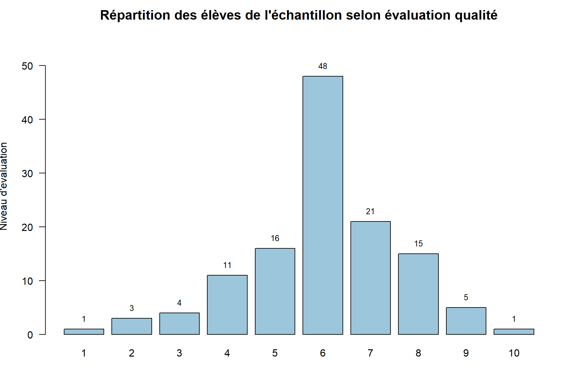

L’alimentation et la santé des lycéens

Contexte
Réalisation d’une enquête auprès de 125 lycéens du lycée François Malherbe afin d’étudier leurs habitudes alimentaires et leur perception de l’impact de l’alimentation sur leur santé.
Méthode
Conception d’un questionnaire de 13 questions, création d’un dictionnaire de données, puis réalisation d’une analyse exploratoire à partir de tableaux et de visualisations. Des analyses en profils colonnes ont également été utilisées pour étudier les relations entre habitudes alimentaires et problèmes de santé.
Résultats
60 % des lycéens déclarent faire attention à leur alimentation, tandis que la viande est l’aliment le plus consommé. L’analyse met également en évidence des différences dans les problèmes de concentration, de digestion et de poids selon les habitudes alimentaires, notamment 46 % de problèmes de concentration chez les consommateurs de produits transformés contre 20 % pour les produits bio.